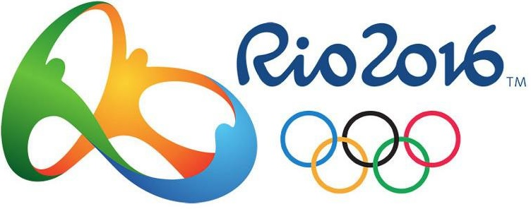

Jeux olympiques 2016
Edition du jombotron
Votre pronostique pour le hockey
Double-cliquez sur un pays pour remplir automatiquement la case du vainqueur et changer son lien wikipedia :
Lien wikipedia du pays vainqueur
Information sur les tickets
N'oubliez pas d'acheter vos tickets sur internet !
Logo des JO

Natation 200m : pays participants
- USA
- Japon
- Hongrie
- Afrique du sud
- Danemark
- Belgique